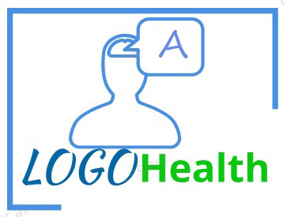

Grupo Científico Estudiantil
Apasionados por la salud y el lenguaje.

LOGOHealth
Ciencia, Educación y Logopedia
Saber más
Objetivo
Sistematizar acciones investigativas con los estudiantes que garanticen el desarrollo científico y docente de estos en líneas de investigación relacionadas con el enfoque interdisciplinar de la Logopedia, particularmente las ciencias médicas y la Lingüística.
Tareas
- Autodiagnóstico para identificar necesidades y potencialidades sobre la relación de la Logopedia con las ciencias médicas
- Introducción de algunos resultados de investigaciones de las ciencias médicas en la atención logopédica integral.
- Atención logopédica integral a niños con necesidades especiales del lenguaje y la comunicación.
- Elaboración de presentaciones y materiales docentes para apoyar las actividades del componente académico.
- Elaboración y presentación de ponencias en eventos a todos los niveles.
- Participación como autor(es) o coautor(es) en artículos científicos.
Impacto
- Aumento y eficiencia de la gestión del conocimiento y aprendizaje.
- Mayor integración de los conocimientos para el ejercicio de la profesión y la visibilidad de la carrera.
- Mayor incorporación de los estudiantes a la actividad científica e investigativa.
Resultados
- Convenios de trabajo con algunos centros de salud en el territorio y fuera de este.
- Trabajos científicos estudiantiles sobre diferentes temáticas relacionadas con las ciencias médicas y la Lingüística en la atención logopédica su introducción en la práctica profesional.
- Elaboración de materiales, artículos, documentos de trabajo, folletos y otros recursos socio-educatios.
Testimonios
"LOGOHealth ha revolucionado nuestra forma de abordar la investigación en el ámbito de la salud y el lenguaje. Su enfoque innovador es inspirador."
"Somos un grupo con resultados prometedores"